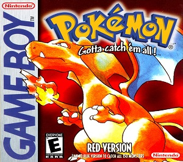

Retro-Spective
Pokemon
Pokemon is a fantasy action adventure role play game developed for the GameBoy by GameFreak. The game is played from a top-down perspective to your the player's character, a beginning Pokemon trainer whom the player may name themselves. The player must make their way through a region known as Kanto, battling and capturing Pokemon, defeat Gym leaders, and finally defeat the Elite Four, the four best trainers in the land. The player has a rival who will show up at key points in the game, whom the player must also defeat (and can also name). The game is beaten when the player has defeated the Elite Four, but not complete until the player has caught all 151 Pokemon.
